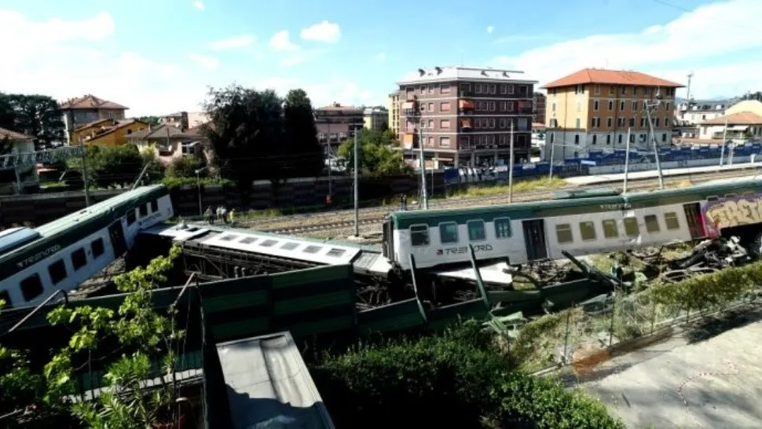
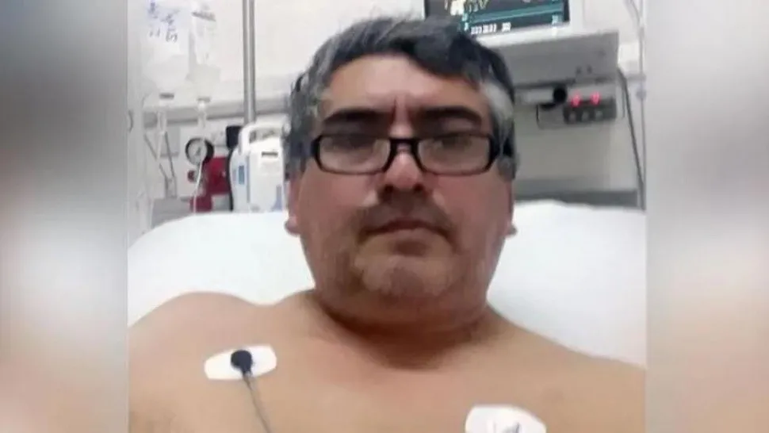
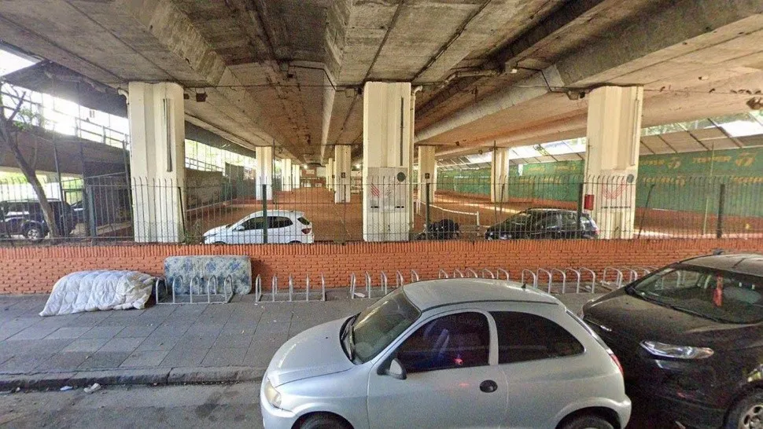

La historia del tren "fantasma" que anduvo 10 kilómetros sin maquinista
Crónica Fenómenos Paranormales El extraño hecho ocurrió en la región italiana de Lombardía, donde la formación arrancó sin control a alta velocidad con sólo un pasajero, que sufrió heridas leves.

En plena pandemia de coronavirus una impactante noticia tomó notoriedad mundial luego de registrarse una insólita situación, de características paranormales, que de milagro no terminó en una increíble fatalidad, vaya a saber por qué razón. Sucede que una formación de un tren sin maquinista recorrió al menos 10 kilómetros a alta velocidad y en uno de sus vagones viajaba sólo un pasajero, el cual sufrió heridas leves a pesar del impactante choque que protagonizó el convoy, tras descarrilar en una vía muerta y chocar contra una barrera de contención.
Luego del insólito e inexplicable hecho, del que aún al cierre de esta edición los especialistas ferroviarios no habían encontrado una explicación lógica, tras los primeros análisis algunos especialistas paranormales evaluaron que la formación únicamente pudo ser dirigida por espíritus del más allá, aunque no lograron poder determinar si se trató de algo relacionado directamente con el ferrocarril en sí, con la unidad siniestrada o bien con el único pasajero que allí viajaba y que bien pudo llegar a perder la vida. Las hipótesis sobran, pero los hechos hablan por sí solos y las respuestas escasean.
"Fui a tres asados", la frase del acusado de iniciar brote de coronavirus en Santiago
El hombre apuntado por la opinión pública de ser el generador del masivo contagio del virus Covid-19 se sinceró ante la Justicia. Enterate qué más dijo.

El hombre acusado de ser el iniciador del nuevo brote de coronavirus en la provincia de Santiago del Estero, que originó que se diera marcha atrás con la vuelta a clases y se suspendieran por 30 días, admitió que "participó de tres asados" pero negó que haya viajado a otra provincia "en forma ilegal", informaron fuentes judiciales.
Luis Ávila, el llamado "caso 41", quien esta internado pero fuera de peligro en calidad de detenido, "dio su versión de los hechos desde el 18 de julio hasta el 3 de agosto y dijo que estuvo en tres asados pero según los registros esas personas con las que estuvo dieron negativo de Covid-19”, dijo el fiscal Sebastián Robles.
El papa envió una carta con una bendición y saludo por la fiesta de los 200 años del Santuario de la Virgen de Huachana, que está ubicado en el departamento Alberdi, al norte de la citada provincia.
El papa Francisco envió este viernes una carta con una bendición y saludo por la fiesta de los 200 años del Santuario de la Virgen de Huachana, que está ubicado en el departamento Alberdi, al norte de la provincia de Santiago del Estero.
El rector del santuario, Juani Liébana, dijo que "que el Papa haya tenido este gesto con todos los peregrinos de Huachana nos llena de emoción, porque uno se imagina toda la tarea que tiene, de todo el mundo, y temas tan delicados como la paz y que se tome su tiempo para escribirnos una cartita y llegar a los devotos nos habla del corazón del Papa".
Añadió que ese corazón del Papa “generoso, que piensa en las periferias, en los hermanos campesinos, que vivimos aquí, de la gente humilde que llega a esta fiesta de Huachana y que él hayan tenido esta delicadeza es un gesto enorme, que nos llena de emoción y alegría”.
Cayó femicida en hotel de Constitución por prender fuego a mujer en situación de calle
El atacante de 39 años fue detenido, bajo la carátula de "homicidio doloso agravado por violencia de género". Conocé los detalles.

Un hombre de 39 años fue detenido acusado de haber asesinado a una mujer al prender fuego la casilla en donde la víctima, que aún no fue identificada, se encontraba en situación de calle, en el barrio porteño de Constitución.
El sospechoso fue apresado en un hotel de la zona y en las próximas horas será indagado por juez Walter Candela, titular del Juzgado Nacional en lo Criminal y Correccional 54 por el delito de "homicidio doloso agravado por violencia de género".
Un vecino advirtió que, en la calle Virrey Cevallos 1248 debajo de la autopista 25 de Mayo, se incendiaba una de las casillas allí ubicadas y que un hombre abandonaba el lugar, por lo que dio aviso a la policía.